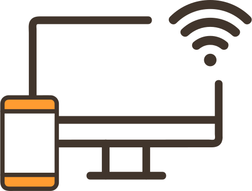
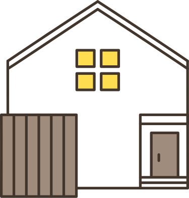

オンピースの起源は、子どもたちの安全と幸福を最優先にするという共通の信念から生まれました。団体の創設者は、児童虐待による悲劇を目の当たりにし、それに対処するための新たな手段を模索しました。そこで生まれたのが「オレンジレター」でした。このアイデアは、子どもたちが自分の声を届ける手段として、アナログな手紙を用いるという新たなアプローチです。
- 
アクセシビリティ向上
インターネットを使用せず手紙を利用することで、スマートフォンやパソコンを持たない子どもたちでも児童相談所へ助けを求めることができます。デジタルデバイドが問題となる状況でも、手紙を通じて安心して相談できます。
- 
それぞれの家庭環境
家庭環境が原因で電話を使用することが難しい場合でも、手紙は親が家にいる中で秘密裏に助けを求める手段となります。
-
証拠の確保とプライバシー尊重
手紙は物理的に残るため、証拠として有効です。同時に、手紙を通じて相談する際には子どもたちのプライバシーが尊重され、安全な環境で自分の気持ちを表現できます。
オレンジレターは、子どもたちがインターネットを使用せずに安全に相談できる仕組みとして注目され、地域社会での導入が始まりました。その後、オンピースは情報提供、オンライン相談、啓発活動など多岐にわたる活動を展開し、児童虐待の予防とサポートに焦点を当てています。
オンピースはその起源から、子どもたちが言葉にできない辛さや困難を手紙を通じて伝えることができ、専門家が的確なサポートを提供できることを信じています。この信念に基づき、オンピースは子どもたちが安心して成長できる社会づくりに向けて、情熱的かつ継続的に活動を展開しています。
オンピースは子どもたちの安全と幸福を第一に考え、児童虐待の防止と支援活動に力を注いでいます。弊団体は、オレンジレターと呼ばれる手紙を通じて、子どもたちが虐待や危険な状況から逃れ、声を上げることができる仕組みを提供しています。この手紙は学校、病院、交番などに設置された専用ポストに投函し、受け取った専門家が迅速かつ慎重に対応します。
オンピースはまた、ウェブサイトを通じて情報提供やオンライン相談のプラットフォームを提供しています。子どもたち、保護者、教育者、医療従事者など、様々な立場の人々に対して、児童虐待の予防やサポートに関する知識を発信し、協力体制を築くことを目指しています。
さらに、オンピースは地域社会との連携を強化し、児童虐待防止のための啓発活動を実施しています。子どもたちが健やかに成長できる環境づくりと、社会全体での理解と協力を促進することを使命としています。オンピースは未来への希望を育むため、子どもたちが心地よく成長できるようサポートし続けます。